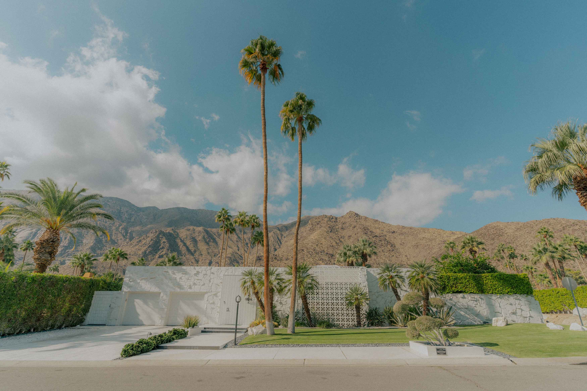
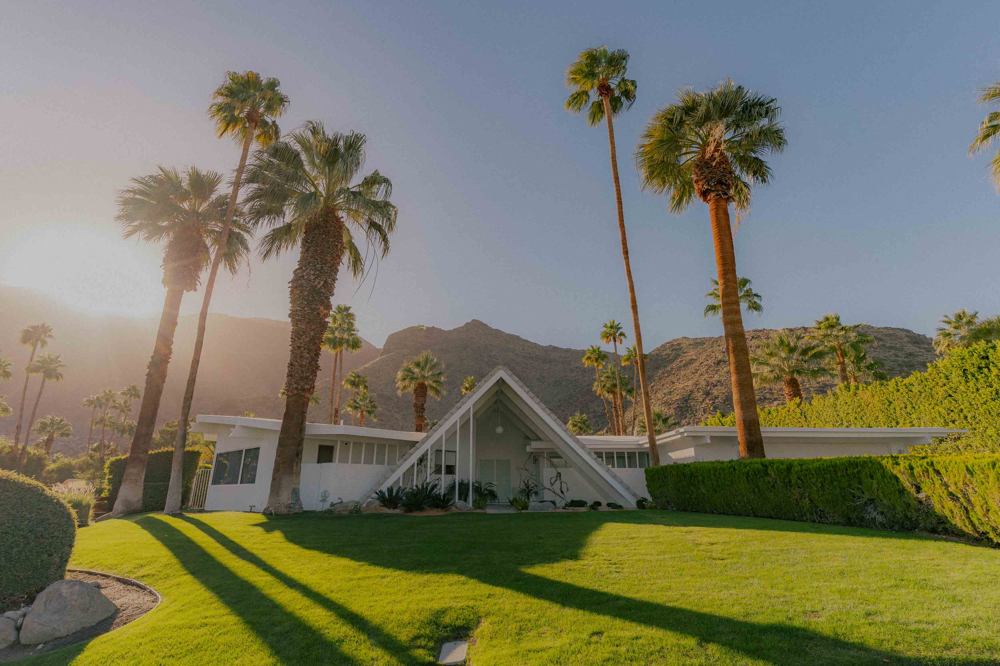
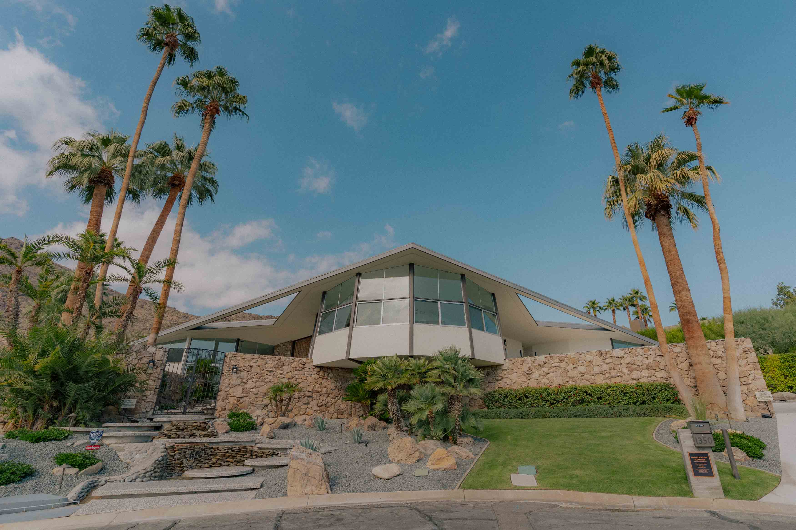

Architecture
Mid-Century Modern Architecture
Mid-century modern (MCM) is a movement in interior design, product design, graphic design, architecture and urban development that was present in all the world, but more popular in North America, Brazil and Europe from roughly 1945 to 1970 during the United States's post-World War II period. MCM-style decor and architecture have seen a major resurgence that began in the late 1990s and continues today. The term was used as early as the mid-1950s, and was defined as a design movement by Cara Greenberg in her 1984 book Mid-Century Modern: Furniture of the 1950s. It is now recognized by scholars and museums worldwide as a significant design movement. The MCM design aesthetic is modern in style and construction, aligned with the Modernist movement of the period. It is typically characterized by clean, simple lines and honest use of materials, and generally does not include decorative embellishments. On the exterior, a MCM home is normally very wide, partial brick or glass walls, low footprints with floor to ceiling windows and flat rooflines, while exposed ceilings and beams, open floor plans, ergonomically designed furniture and short staircases connecting rooms throughout the house often defines the home's interior.
...the sun, the pure air and the simple forms of the desert create perfect conditions for architecture.
Albert Frey in a letter to Le Corbusier, 1935 about Palm Springs
Gallery
 
| Neighborhood | Style | Features |
|---|---|---|
| Old Las Palmas | Mid-Century Modern, Spanish Revival | Historical homes, high-end estates, designed by Neutra & Krisel |
| Racquet Club Estates | Mid-Century Modern | Celebrity homes, Frank Sinatra's former home |
| Vista Las Palmas | Mid-Century Modern | Large estates, desert views, designed by William Krisel |
| Canyon View Estates | Mid-Century Modern | Private homes, desert landscapes, classic modernist style |
| The Movie Colony | Mid-Century Modern, Spanish Revival | Historic celebrity homes |